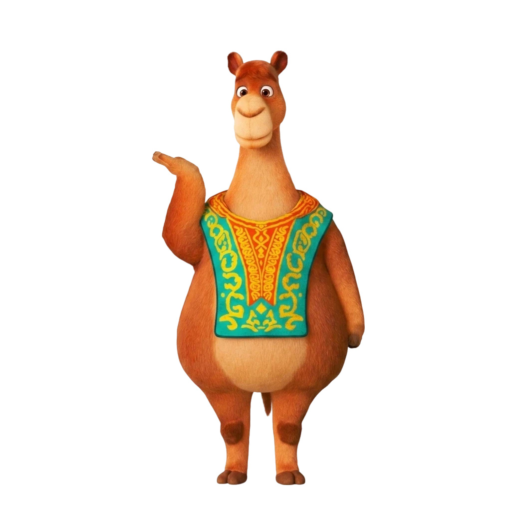

Новая эра обучения и игр!
Мы полностью обновили дизайн приложения, перенесли премиальный стиль с сайта и добавили нашего любимого персонажа КамБота!
Скачать APK
Что мы сделали?
Мы взяли лучшее от веб-версии и перенесли это в мобильное приложение! Теперь вас ждет потрясающий "стеклянный" дизайн (Glassmorphism), фирменная темная тема и плавные анимации. Мы заменили старую 3D-модель на красивого 2D-персонажа с сайта, обновили экран магазина, сделали купоны похожими на настоящие билеты и полностью переработали верхнюю панель управления! А также мы интегрировали передовые технологии больших языковых моделей (LLM) для умного и безопасного общения с детьми!
Интерактивная карта
Путешествуйте по Казахстану, открывайте новые города и учите историю и традиции в игровой форме.
Увлекательные игры
Сборка юрты, счёт с Ботой, викторины и многое другое! Каждая игра развивает полезные навыки.
Реальные награды
Зарабатывайте ботакоины и обменивайте их на реальные купоны и скидки в магазине!